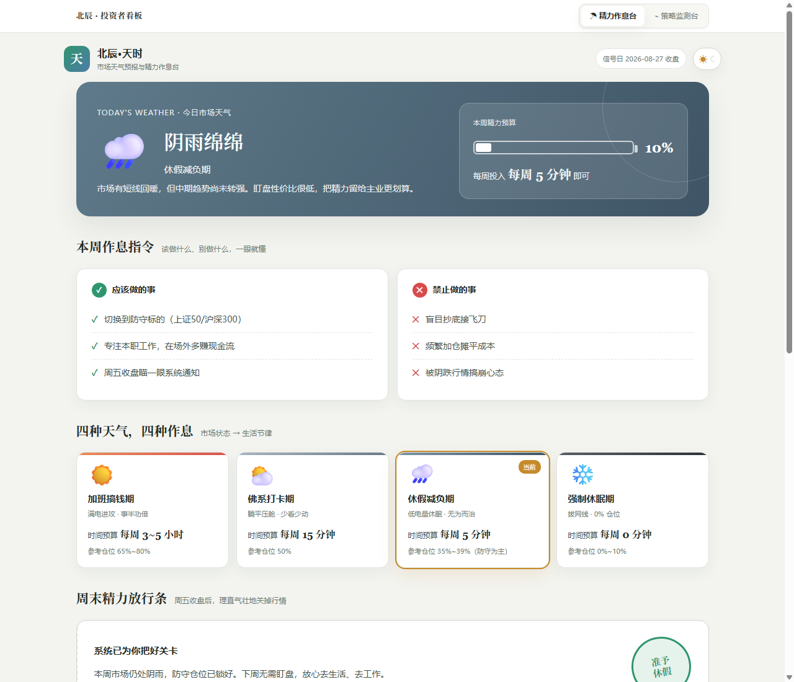

PROJECT README
A股精力管理系统
用6只核心宽基的趋势广度判断市场天气，把仓位纪律与盯盘精力放进同一套规则里。

这是什么
这是一个纯 HTML、CSS 和 JavaScript 的 A 股市场状态研究原型，下载后可以直接打开，不依赖框架、后端或数据库。
tianshi.html：面向普通投资者的精力作息台。index.html：面向进阶使用者的策略监测台。project.html：适合项目展示和 GitHub Pages 的图文详情页。
核心模型
系统观察上证50、沪深300、中证500、中证1000、创业板指和科创50：
- 判断周收盘是否站上 MA4、MA12、MA24。
- 计算短、中、长期市场广度。
- 使用
综合广度 = 35% × B4 + 45% × B12 + 20% × B24。 - 把市场分为多头、震荡、防守、危机。
- V2 再按状态决定总仓位，并使用复合动量、Top 3 迟滞和 MA4 六折平抑。
快速开始
直接打开
下载仓库后打开 tianshi.html。浏览器会读取已烘焙的周线和样例回测。
本地服务
python -m http.server 8000
# 访问 http://localhost:8000/project.html更新市场数据
cp config/data-source.example.json config/data-source.json
node scripts/update-data.mjs
node scripts/validate.mjs更新完成后刷新精力作息台和策略监测台，两者都会读取新的 data/history-baked.js。默认剔除尚未完成的当周周线。
样例回测
仓库包含 2023-01-02 至 2026-08-24 的 187 周 V2 样例 CSV。页面按净值序列复算：累计收益 +47.4%、几何年化 +11.2%、最大回撤 -10.8%、年化波动 16.6%、夏普 0.74、卡玛 1.04。
这些数字不是实盘业绩。回测采用最终周收盘信号并假设同收盘价成交，可能低估滑点并含同收盘成交偏差。
目录
project.html 图文项目详情
tianshi.html 精力作息入口
index.html 策略监测台
app.js / styles.css 策略台逻辑与样式
data/ 浏览器数据与样例回测
config/ 数据源配置模板
scripts/ 更新与校验脚本
docs/ 模型、数据、架构与风险文档
assets/screenshots/ 页面截图验证
node --check app.js
node --check scripts/update-data.mjs
node --check scripts/validate.mjs
node scripts/validate.mjs数据与合规边界
- 默认腾讯行情适配器属于非官方公开接口，没有稳定性或长期可用性保证。
- 仓库不包含账户、密钥、交易接口或自动下单能力。
- 行情、策略信号和样例回测仅供研究与产品原型验证，不构成投资建议。
- 任何策略都可能失效，过往表现不预示未来收益。
License
代码以 MIT License 发布。第三方行情数据及接口的使用受原提供方条款约束。